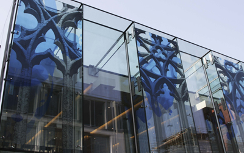
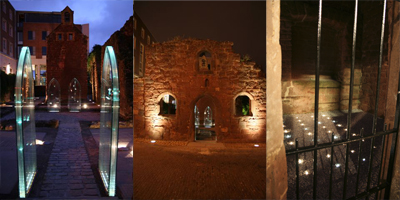
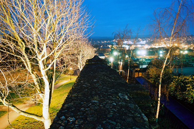

InSite Arts worked with the project design team to develop a programme of work that contributed to both the public realm and the built environment. In all cases the artists invited to work on the development were selected due to their commitment to in-depth research and a genuine interest in the Exeter and the particular sites within which they were to work.
Each of the artists' work celebrated the historical importance of the city and supported the contemporary vision laid out in the development's original masterplan, primarily to open vistas and create permeable streetscapes. All the work was created in partnership with the specialist design practices working on the development - architects, landscape architects and lighting designers.

At the heart of the development is a new public square. Designed as a continental-style piazza featuring cafes and restaurants, the area has become a focus for eating and dining in the city. A glass pavilion, which houses two new restaurants forms the centrepiece of the square, and is also the site of one of the development's most exciting public art commissions.
Six glass panels, each measuring 4137 mm by 1748 mm, have been installed on the facade of the pavilion featuring the work of Iranian-born British artist Katayoun Dowlatshahi. Inspired by the sacred architecture of Exeter Cathedral, and its close proximity behind the square, the artist has created a series of 'windows' which echo the notion of a medieval rood screen. In the same way that cathedral windows are intended as apertures to heavenly bodies as well as being focal points for personal contemplation, the glass panels bring to a secular space the opportunity for peaceful reflection while at the same time emphasising the ephemeral nature of light.
The cathedral is a living monument and the glass pavilion is, by association, a rood screen obscuring and simultaneously revealing this sacred space. The designs appearing on each glass panel, applied through a process of hot enamelling and silk screening, also carry references to the city's network of medieval subterranean aqueducts.
Architect:
Panter Hudspith Associates
Screen
printing: Proto Studios Ltd

As part of this major programme of public art in and around Princesshay, Patricia MacKinnon-Day was commissioned to create a permanent installation on the site of the historically important Almshouses in Catherine Street. Constructed in 1450, the Almhouses have recently undergone structural repair and enhancements following an initiative by Land Securities, Exeter City Council and English Heritage to create an improved setting for one of Exeter's most historic landmarks.
The work created by Patricia MacKinnon-Day, entitled 'Marking Time', provides an explanation of the buildings' history, and consists of the recreation of the lost doors which would have originally been part of the Almshouses. These take the form of free-standing arched doors made of glass, and are sited in the precise location of where the doors were originally situated. Copied from the medieval designs of the Almshouses, these doors are illuminated to showcase archaeological finds from the site, encased within the glass. Other elements of the installation include rows of still and flickering votive lights filling the chapel space, with texts from the historic Chapter Acts books, describing the lives of medieval occupants, etched into the paving.
Lighting
designer: BDP Lighting
Landscape
architect: Livingston Eyre Associates
This new work by Exeter-based sculptor Roger Dean incorporates a wall of curved
stainless steel with two highly detailed bronze reliefs. The front relief, within
the concave of the sculpture, was originally created by Roger for his memorial fountain
located in the city centre. Land Securities invited Roger to revisit his work when
it became apparent, during development of Princesshay, that his original fountain
would not survive relocation.
The new bronze and steel sculptural work is located within Broadwalk House Gardens in Southernhay. The inspiration for two bronze reliefs, as with the original fountain, was from the photographic records taken the day after the bombardment of Exeter in May 1942. These reliefs are encapsulated in a steel sculptural wall that creates a new focal point in the gardens, which aims to offer the busy users of the city a place for a moment's respite and contemplation.
Landscape
architect: Livingston Eyre Associates
Lighting
designer: BDP Lighting
Fabricator:
Taunton Fabrications

The temporary photographic commission was awarded to regionally based Patrick Shanahan, and was exhibited in and around Exeter and the development site during the construction programme. Patrick chose to investigate the contemporary 'cultural landscape' and capture moments of Exeter perhaps long taken for granted or no longer easily accessible. The 'ancient+modern' images revealed the juxtaposition of a modern developing city with the old and historically rich foundations of Exeter. By contrast, Patrick's commission for the Paris Street hoardings, 'Riverwalk', was based around a series of walks taken along the River Exe, from Exeter's Quayside to Exmouth in the east and then across to Dawlish, west of the city.
'The images displayed in Paris Street are not chronologically ordered. They are sequenced to convey the experience of walking through the landscape unconsciously taking in the views in a haphazard way, as your eyes wander from a general view to a detailed view'
Patrick's exquisite photographs convert otherwise recognisable urban landscapes into reworked places which have both a strong, evocative capacity and a sense of artificiality about them. In blurring the distinction between reality and imagination, Shanahan's photographs manage to alter the way we see.